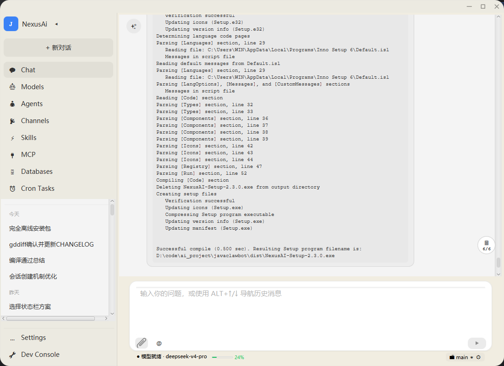
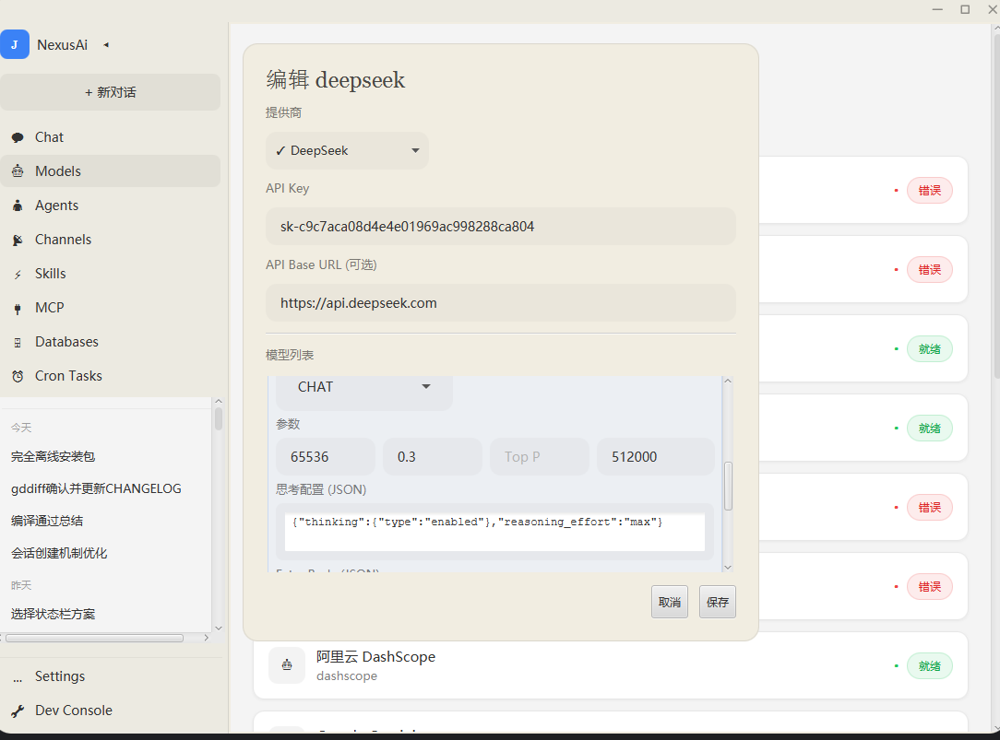
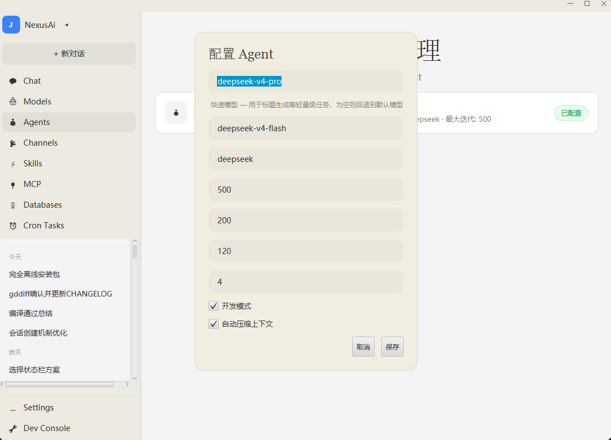
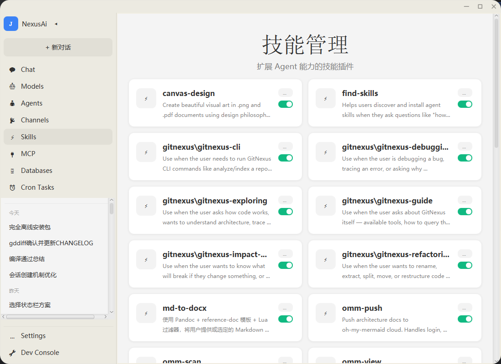
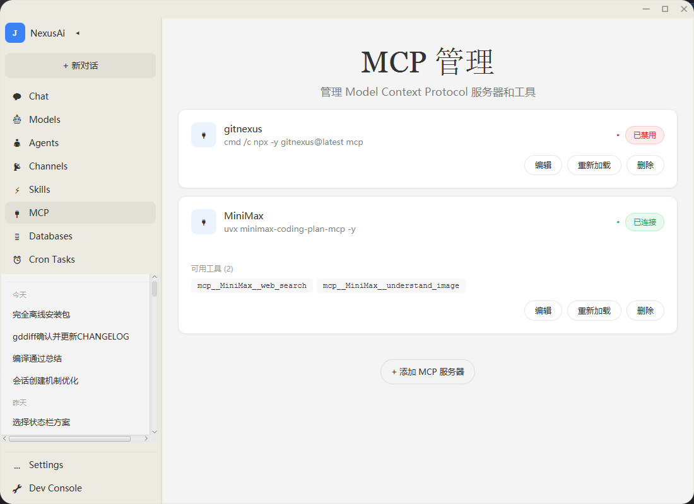
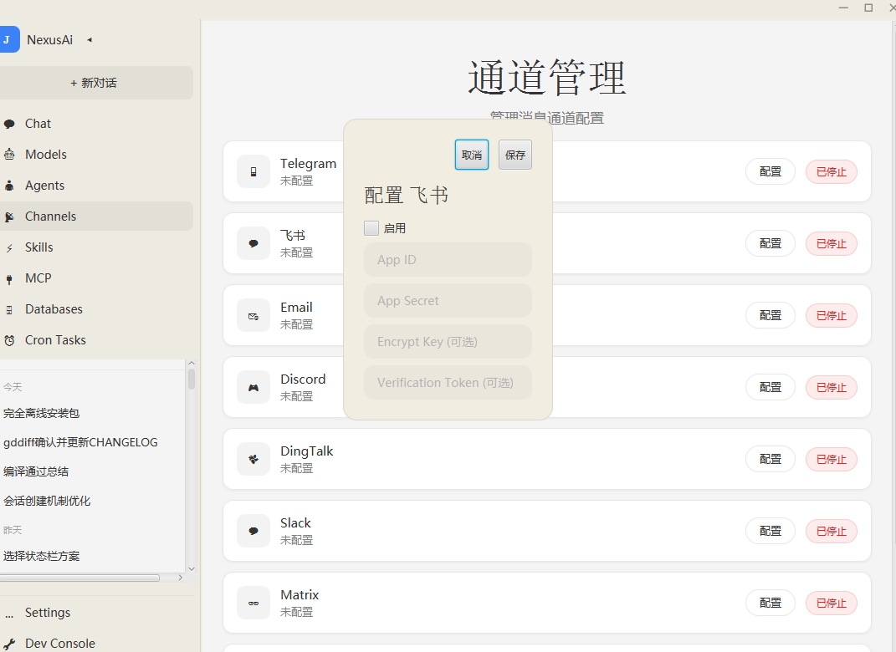
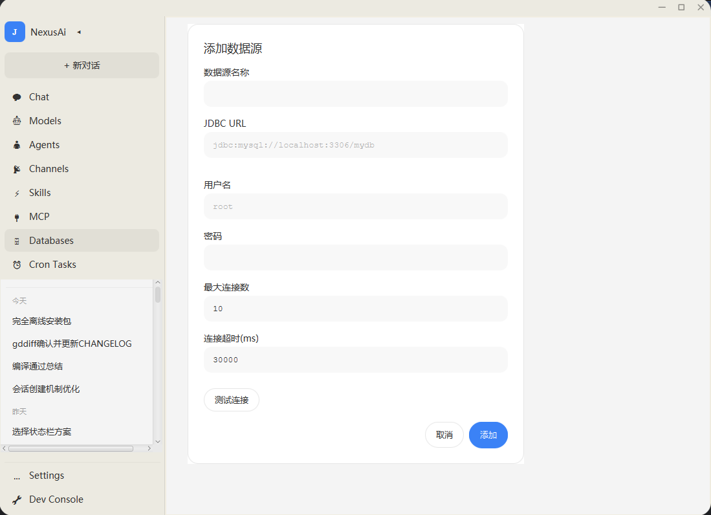
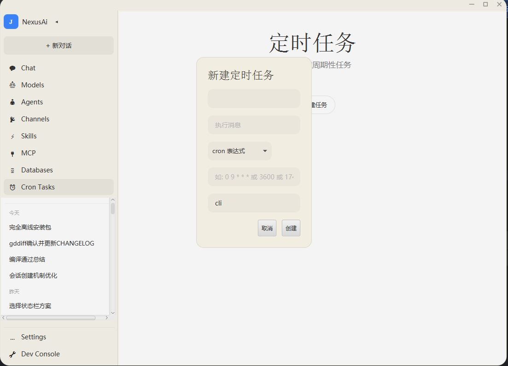

系统概览
NexusAi 是一款 AI Agent 管理平台，帮助您配置和管理 AI 助手。系统采用左侧导航 + 右侧内容区的经典布局。
| 模块 | 功能说明 |
|---|---|
| Chat | 与 AI 进行对话交互的主界面 |
| Models | 配置 AI 大模型（API Key、参数等） |
| Agents | 配置 Agent 的行为参数（模型选择、迭代次数等） |
| Channels | 连接外部通讯平台（飞书、Telegram、Discord 等） |
| Skills | 管理 Agent 的技能插件（扩展能力） |
| MCP | 管理 Model Context Protocol 服务器（外部工具连接） |
| Databases | 配置数据库连接，让 AI 能查询数据库 |
| Cron Tasks | 设置周期性自动执行的任务 |
对话页面
对话页面是您与 AI 交互的主界面。点击左侧 「+ 新对话」 按钮即可开启一个新的 AI 会话。

页面结构
| 区域 | 位置 | 说明 |
|---|---|---|
| 输出窗口 | 中央大块区域 | 显示 AI 的回复内容，支持 Markdown 渲染、代码高亮 |
| 输入框 | 底部白色区域 | 输入您的问题或指令，支持 ALT+↑/↓ 导航历史消息 |
| 附件按钮 | 输入框左侧 | 上传文件（图片、文档等）供 AI 分析 |
| @ 提及 | 输入框左侧 | 提及特定 Agent 或上下文 |
| 状态栏 | 输入框下方 | 显示当前模型名称和上下文使用率进度条 |
模型配置
模型配置是让 AI 拥有智能的核心步骤。您需要在这里填入大模型服务商的 API 凭证和参数。

配置项详解
| 配置项 | 类型 | 必填 | 说明 |
|---|---|---|---|
| Provider | 下拉选择 | 是 | 选择 AI 服务商，如 DeepSeek、阿里云 DashScope 等 |
| API Key | 密码输入 | 是 | 服务商提供的 API 密钥，用于身份认证。前往对应平台获取 |
| API Base URL | 文本输入 | 否 | API 端点地址，默认为官方地址。使用代理时需修改 |
| 模型列表 | 下拉选择 | 是 | 选择具体模型类型，如 CHAT（对话模型） |
| Max Tokens | 数值 | 否 | 单次最大输出长度，默认 65536 |
| Temperature | 数值 | 否 | 随机性参数，0~1。越低越确定，越高越有创意。推荐 0.3 |
| Top P | 数值 | 否 | 核采样参数，控制输出多样性 |
| 上下文窗口 | 数值 | 否 | 模型能同时处理的最大 Token 数，默认 512000 |
| 思考配置 | JSON | 否 | 高级参数，如开启推理模式、设置推理强度 |
platform.deepseek.com，阿里云在 dashscope.aliyun.com。
如何获取 API Key
- 访问对应服务商官网（如 platform.deepseek.com）
- 注册/登录账号，进入「API Keys」或「密钥管理」页面
- 点击「创建新的 API Key」，复制生成的密钥
- 回到 NexusAi，粘贴到 API Key 输入框中
- 点击「保存」按钮
Agent 配置
Agent 是 AI 助手的行为配置。您可以在这里设置 Agent 使用哪个模型、最多迭代多少次、是否开启调试模式等。

配置项详解
| 配置项 | 类型 | 说明 |
|---|---|---|
| 主模型名称 | 文本 | Agent 使用的核心 AI 模型。推荐使用强大的模型处理复杂任务 |
| 快速模型 | 文本 | 用于标题生成等轻量级任务。为空则回退到主模型。使用快速模型可节省成本 |
| 模型系列 | 文本 | 模型所属系列/供应商标识，如 deepseek |
| 最大迭代次数 | 数值 | Agent 循环思考/自我修正的最大次数，防止无限循环。推荐 500 |
| Token 限制 | 数值 | 单次任务的 Token 上限。默认 200 |
| 超时时间 | 数值 | 工具执行超时时间（秒）。默认 120 |
| 上下文轮数 | 数值 | 保留的对话轮数。默认 4 |
| 开发模式 | 复选框 | 开启后输出详细日志，方便排查问题。日常使用建议关闭 |
| 自动压缩上下文 | 复选框 | 对话过长时自动总结历史，节省 Token。强烈建议开启 |
deepseek-v4-pro 处理复杂任务，快速模型用 deepseek-v4-flash 处理简单任务，兼顾质量与成本。
技能管理
什么是技能？
技能（Skill） 是 AI Agent 的能力插件。就像手机需要安装 App 才能拍照、导航一样，AI Agent 需要安装技能才能执行专业任务。
my-skill/
├── SKILL.md ← 核心：告诉 AI 这个技能怎么用（必需）
├── scripts/ ← 可执行脚本（可选）
├── references/ ← 参考文档（可选）
└── assets/ ← 图片等静态资源（可选）技能的本质：一段写给 AI 看的说明书（Markdown 格式），告诉 AI 在什么情况下使用、如何使用某个特定能力。
常见技能举例
| 技能名称 | 功能 |
|---|---|
| canvas-design | 创建 PNG/PDF 视觉艺术设计 |
| find-skills | 帮助发现和安装新的 Agent 技能 |
| md-to-docx | 将 Markdown 文档转换为 Word (.docx) 格式 |
| gitnexus-cli | 运行 GitNexus 代码分析命令 |
| gitnexus-debugging | 辅助调试 bug、追踪错误 |
| gitnexus-exploring | 帮助理解代码架构和调用关系 |
| gitnexus-impact | 评估代码变更的影响范围 |
| omm-scan / omm-view | 扫描和查看项目架构图 |
从哪里获取技能？
| 平台 | 网址 | 技能数量 | 特点 |
|---|---|---|---|
| ClawHub | clawhub.ai | 21,000+ | OpenClaw 官方技能市场，中文友好，有中国镜像 |
| Skills.sh | skills.sh | 110,000+ | 全球最大，支持 27+ AI 平台，每小时新增 550+ 技能 |
| GitHub | github.com | 海量 | 开源技能仓库，可直接查看源码 |
| 魔搭社区 | modelscope.cn | 丰富 | 阿里达摩院出品，中文 AI 模型和技能社区 |
技能管理页面

操作说明
| 操作 | 方式 | 说明 |
|---|---|---|
| 启用技能 | 点击卡片右上角开关 | 开关激活后 Agent 可在对话中调用该技能 |
| 禁用技能 | 再次点击开关 | 禁用后 Agent 不会调用该技能 |
| 更多操作 | 点击 ··· 按钮 | 可删除、更新或查看技能详情 |
MCP 管理
什么是 MCP？
MCP（Model Context Protocol，模型上下文协议） 是一种标准协议，让 AI 模型能够安全地连接外部工具和数据源。
MCP 就像 AI 的 "USB 接口"。通过 MCP，AI 可以：
- 联网搜索 — 获取最新信息
- 图像理解 — 分析图片内容
- 文件操作 — 读写本地文件
- 数据库查询 — 访问数据库
- 代码分析 — 理解项目代码结构（如 GitNexus）
MCP 管理页面

页面元素说明
| 元素 | 说明 |
|---|---|
| 服务器卡片 | 每个 MCP 服务器一张卡片，显示名称、启动命令、状态 |
| 已连接 | 绿色标签，表示服务运行正常 |
| 已禁用 | 红色标签，表示服务未运行 |
| 可用工具 | 卡片下方列出该服务器提供的具体工具（如 web_search、understand_image） |
| 编辑 | 修改服务器名称或启动命令 |
| 重新加载 | 重启该 MCP 服务 |
| 删除 | 移除该服务器配置 |
当前已集成的 MCP 服务器
| 服务器 | 启动命令 | 提供的工具 |
|---|---|---|
| gitnexus | cmd /c npx -y gitnexus@latest mcp | 代码智能分析（上下文查询、影响分析、重命名等） |
| MiniMax | uvx minimax-coding-plan-mcp -y | 网页搜索 (web_search)、图像理解 (understand_image) |
如何添加新的 MCP 服务器？
- 点击页面底部 「+ 添加 MCP 服务器」 按钮
- 输入服务器名称（自定义标识）
- 输入启动命令（如
uvx some-mcp-server或npx some-package） - 点击保存，系统会自动启动该 MCP 服务
- 状态变为 已连接 即表示可用
渠道配置
渠道配置让 NexusAi 能够连接到外部通讯平台，使 AI 能通过飞书、Telegram、Discord 等渠道与用户交互。

支持的渠道
飞书配置项（以飞书为例）
| 配置项 | 必填 | 说明 |
|---|---|---|
| 启用 | - | 勾选后激活该渠道连接 |
| App ID | 是 | 飞书开放平台应用的唯一标识符 |
| App Secret | 是 | 飞书应用的密钥，与 App ID 配合认证 |
| Encrypt Key | 否 | 消息加密密钥（如果飞书后台开启了加密） |
| Verification Token | 否 | 回调校验令牌，用于验证请求来源 |
数据库配置与安全围栏
数据库模块让 AI 能够查询和操作数据库，这是企业级应用的核心能力。同时系统内置了多层安全围栏，确保 AI 不会执行危险操作。
数据库配置页面

配置项详解
| 配置项 | 说明 | 示例值 |
|---|---|---|
| 数据源名称 | 自定义名称，用于在对话中引用 | 生产数据库、analytics |
| JDBC URL | 数据库连接字符串 | jdbc:mysql://localhost:3306/mydb |
| 用户名 | 数据库登录账号 | root |
| 密码 | 数据库登录密码 | ******** |
| 最大连接数 | 连接池最大连接数，默认 10 | 10 |
| 连接超时(ms) | 连接超时时间（毫秒），默认 30000 | 30000 |
支持的数据库类型
操作步骤
- 填写数据源名称、JDBC URL、用户名、密码
- 点击 「测试连接」 按钮验证配置是否正确
- 测试通过后点击 「添加」 保存配置
安全围栏详解
NexusAi 的数据库工具内置了四层安全围栏，全面防护 AI 误操作或恶意 SQL：
参数化查询
杜绝拼接注入
自动识别只读/破坏性
8 类危险操作标记
破坏性 SQL 必须
人工确认
自动提交/回滚
支持手动事务控制
第一层：SQL 注入防护
所有 SQL 参数均通过 命名参数 → 位置参数 转换后使用 PreparedStatement 执行，从根本上杜绝 SQL 注入。参数以 :name 格式传入，系统自动转换为 ? 占位符并安全绑定。
第二层：操作分类检测
系统自动将 SQL 分为两类：
| 类型 | 操作 | 处理方式 |
|---|---|---|
| 只读 | SELECT、SHOW、DESCRIBE、EXPLAIN、WITH | 直接执行 |
| 破坏性 | INSERT、UPDATE、DELETE、TRUNCATE、DROP、ALTER、CREATE、REPLACE | 必须用户确认 |
第三层：用户确认拦截
当 AI 尝试执行破坏性 SQL 时，系统会立即暂停，弹出确认对话框：
- 显示完整的 SQL 语句供审核
- 用户选择"允许"或"拒绝"
- 拒绝后 SQL 不会被执行
- 只有用户明确选择"允许"后才继续执行
第四层：事务保护
- 非事务模式下，更新操作执行后自动提交
- 支持手动事务：
BEGIN→ 执行多条 SQL →COMMIT或ROLLBACK - 发生异常时自动回滚，保护数据一致性
- 数据库密码以明文存储在配置文件中，请确保服务器安全
- 生产环境建议使用只读账号连接数据库
- 定期审计 AI 的数据库操作日志
- 敏感表可配置数据库权限进行限制
数据库工具完整执行流程
用户: "帮我查一下今天的订单数量"
1. AI 理解意图，生成 SQL
SELECT COUNT(*) FROM orders WHERE date = today
2. 系统调用 db 工具
→ 检测 SQL 类型：SELECT = 只读 ✓
3. 参数化处理 (NamedParameterProcessor)
:today → ? → PreparedStatement.setObject()
【SQL 注入防护】
4. 执行查询 + 自动分页
→ 从连接池获取连接 (HikariCP)
→ 执行 COUNT 获取总数
→ 分页返回结果 (默认每页 500 行)
5. 返回结果给 AI
{ rows: [...], _page: 1, _totalRows: 42 }
AI 用自然语言回复用户
———
如果是破坏性 SQL（如 DELETE）：
2'. 系统调用 db 工具
→ 检测 SQL 类型：DELETE = 破坏性 ✗
→ 返回 AskUserQuestion 格式
→ AgentLoop 检测 awaiting_response
→ 暂停 AI，弹出确认框
├── 用户点「拒绝」→ SQL 不执行，返回错误
└── 用户点「允许」→ 继续执行 → 参数化 → 执行 → 提交关键源码安全点
| 安全机制 | 实现文件 | 代码行 |
|---|---|---|
| 破坏性SQL检测 | DbTool.java | isDestructive() 方法，检查 8 类危险操作 |
| 用户确认拦截 | DbTool.java | execute(Map, ToolUseContext) 覆写方法 |
| SQL注入防护 | NamedParameterProcessor.java | 命名参数 → 位置参数 + PreparedStatement |
| 连接池管理 | DataSourceManager.java | HikariCP 连接池，支持外部驱动加载 |
| 事务控制 | DbTool.java | handleTransaction() 方法 |
定时任务
定时任务让您能够按计划自动触发 AI 执行任务，比如每天自动生成报告、定时检查系统状态等。

配置项详解
| 配置项 | 说明 | 示例 |
|---|---|---|
| 任务名称 | 自定义名称，方便识别 | 每日工作总结 |
| 执行消息 | 触发时发送给 AI 的指令 | 总结今天的对话并生成日报 |
| 定时类型 | cron 表达式 / 固定间隔 / 特定时间 | cron 表达式 |
| 时间规则 | 根据定时类型填写 | 0 9 * * * (每天9点) |
| 执行环境 | 运行载体 | cli |
Cron 表达式速查
| 表达式 | 含义 |
|---|---|
0 9 * * * | 每天上午 9:00 |
0 */2 * * * | 每 2 小时 |
0 9 * * 1-5 | 工作日（周一至周五）上午 9:00 |
3600 | 每 3600 秒（每小时）运行一次 |
17:00 | 每天下午 5:00 |
附录：技能市场资源汇总
ClawHub — OpenClaw 官方技能市场
| 项目 | 详情 |
|---|---|
| 官网 | https://clawhub.ai |
| 技能数量 | 21,000+（截至 2026.05） |
| 定位 | OpenClaw 的 "App Store"，技能注册与分发平台 |
| 安装方式 | clawhub install <skill-name> |
| 特点 | 中文友好、有中国镜像站、完全免费、社区评分 |
| CLI 安装 | npm i -g clawhub |
Skills.sh — 全球最大 AI 技能生态
| 项目 | 详情 |
|---|---|
| 官网 | https://skills.sh |
| 技能数量 | 110,000+（截至 2026.05），每小时新增 550+ |
| 定位 | 全球最大的开源 AI 技能生态平台 |
| 安装方式 | npx skills add <owner/repo> |
| 支持平台 | Claude Code、Cursor、Copilot、Windsurf、Zed 等 27+ 平台 |
GitHub 开源技能仓库
| 仓库 | 说明 |
|---|---|
| openclaw/skills | OpenClaw 官方技能仓库 |
| github.com/topics/clawbot-skill | GitHub 上标记为 clawbot-skill 主题的仓库 |
| 搜索技巧 | 在 GitHub 搜索 SKILL.md 文件可发现大量社区技能 |
魔搭社区 (ModelScope)
| 项目 | 详情 |
|---|---|
| 官网 | https://modelscope.cn |
| 定位 | 阿里达摩院出品的 AI 模型和技能社区 |
| 特点 | 中文资源丰富、国内访问快、模型+技能一站式 |
| 适用场景 | 寻找中文优化的 AI 技能和模型 |
技能安全选型原则
- 来源可信：优先选择官方市场（ClawHub、Skills.sh）和知名开发者
- 查看源码：安装前阅读 SKILL.md，确认技能不会执行危险操作
- 最小权限：只安装当前需要的技能，不用的及时禁用
- 警惕恶意技能：曾有恶意技能诱导 AI 进行加密货币挖矿，务必从可信源安装